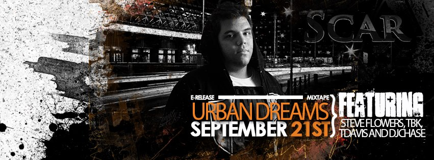

New Latin HipHop artist and producer; Scar/DJScar announced the release of his mixtape earlier on this week. The freshman project titled Urban Dreams or Sueños Urbanos is one of the most promising works of Latin HipHop in North America Urban Dreams is comprised of fifteen songs in which Scar describes multiple life experiences, thoughts and situations that he has lived. The two primary singles of the mixtape are The Return of Simba (August 26th) and Confidence (September 7th) Scar has announced earlier this week that his work is something that makes him very proud, and that theres a little bit of something for everyone on the mixtape. He broke down the multiple phases that went into his beat selection and lyrical composition saying: "Music speaks to me, the process of beat selection is the most beautiful, I needed instrumentals that invoked feelings, and there are a lot of talented people out there." As far as his Lyrics he expressed the following: "I have never truly had a problem with writing, it has always been what I do to vent off. Life puts a lot of pressure on individuals, and writing was always a release, I dont think Ive ever failed in that area." He also expressed that the studio process and promotion process were his favorites.
Scars growth appears to be innevitable as he starts to pair up with very local strong teams. His manager Christian Quiroga mentioned earlier this week: "He..(Scar)...is working really hard in picking up things, he is in the process of standing up on his own two feet, and he has the support of a lot of people both locally and internationally." Scar has been teaming up with local monster Blacklight Propaganda for everything that is coverwork, portrait work, photography and videography, while overseeing everything internationally with Ricardo Mantilla. The international Web Designer/Social Media genius, is inputing a lot of his time and effort into the process and progress of Scar's career and image. Scar thanked him and Blacklight Propaganda personally through Social Media earlier this week by saying: "BP and Ricky have in all honesty been the best thing that has ever happened to me, I feel like we have so many ideas and potential, that we can cover every single aspect of what an artist is. They are really great, and I can not see myself working with anyone else." The project Urban Dreams is definitely going to leave a mark on what the artist does from now. He says that he still has a lot of material and multiple directions he wants to cover. When asked about doing shows or collabs, he said he would be open to do so when the right time comes, for now hes just looking to express himself to the outmost of his capacities.